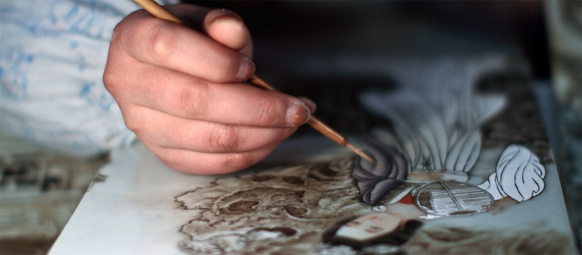

越剧名家萧雅携两台大戏进京献艺
浏览次数： 57次 发布时间：2017-06-20

根据联合国教科文组织的《保护非物质文化遗产公约》定义：非物质文化遗产(intangible cultural herit指被各群体、团体、有时为个人所视为其文化遗产的各种实践、表演、表现形式、知识体系和技能及其有关的工具、工艺品和文化场所。各个群体和团体随着其所处环境、与自然界的相互关系和历史条件的变化不断使这种代代相传的质文化遗产得到创新，同时使他们自己具有一种认同感和历史感，从而促进了文化多样性和激发人类的创造力。公约义的“非物质文化遗产”包括以下方面：1、口头传统和表现形式，包括作为非物质文化遗产媒介的语言；2、表演；3、社会实践、仪式、节庆活动；4、有关自然界和宇宙的知识和实践；5、传统手工艺。
工艺品和文化场所。各个群体和团体随着其所处环境、与自然界的相互关系和历史条件的变化不断使这种代代相质文化遗产得到创新，同时使他们自己具有一种认同感和历史感.